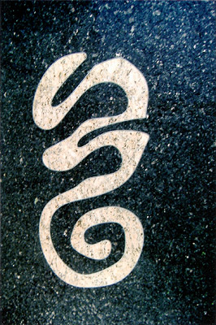
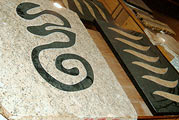
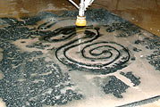
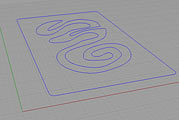

Granite Waterjet Inlays
- (2007)
Computer drafted designs program the waterjet's path and cut out the granite. When creating an inlay you end up with a two opposite versions of the same design.


